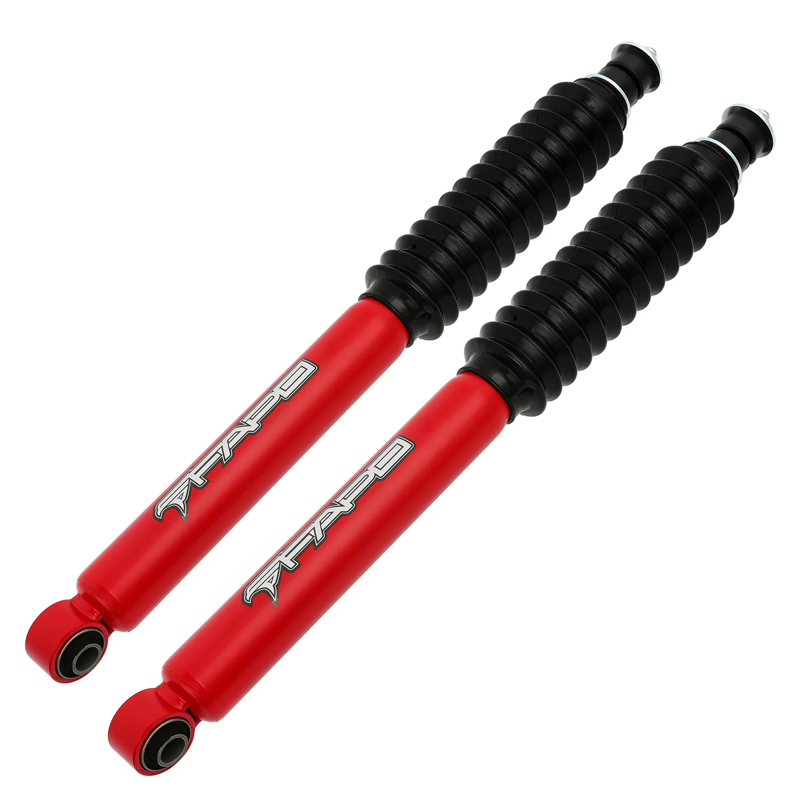

1 / 17FAPO Rear 2-3 in Lift amortyzatory Do 2003-2021 Toyota Land Cruiser Prado 4Runner FJ CRUISER PA292410
Zawartość zestawu: 2X Amortyzatory tylne FAPO P1 Cechy produktu: Dodatkowe 10%-20% siły tłumienia dla niezrównanej stabilności pod obciążeniem i w warunkach terenowych Konstrukcja dwururowa zapewnia doskonałą trwałość i wydajność bez blaknięcia Chromowane, hartowane tłoczyska są odporne na rdzę, korozję i zużycie Tuleje odporne na zimno zapobiegają pęknięciom i sztywności w ekstremalnych temperaturach Wzmocniony, po…
Package Includes: 2X FAPO P1 Rear Shock Absorbers Features: Extra 10%-20% damping force for unmatched stability under load and off-road conditions Twin-tube construction for superior durability and fade-free performance Chromed hardened piston rods resist rust, corrosion, and wear Cold-resistant bushings prevent cracks and stiffness in extreme temperatures Reinforced oversized piston 1.26", shock rod 0.63", and tube 2.13" for ultimate strength and heat resistance
999,99 PLN
Opis produktu
Zawartość zestawu:
- 2X Amortyzatory tylne FAPO P1
Cechy produktu:
- Dodatkowe 10%-20% siły tłumienia dla niezrównanej stabilności pod obciążeniem i w warunkach terenowych
- Konstrukcja dwururowa zapewnia doskonałą trwałość i wydajność bez blaknięcia
- Chromowane, hartowane tłoczyska są odporne na rdzę, korozję i zużycie
- Tuleje odporne na zimno zapobiegają pęknięciom i sztywności w ekstremalnych temperaturach
- Wzmocniony, powiększony tłok 1,26", drążek amortyzatora 0,63" i rura 2,13" zapewniają najwyższą wytrzymałość i odporność na ciepło
Package Includes:
- 2X FAPO P1 Rear Shock Absorbers
Features:
- Extra 10%-20% damping force for unmatched stability under load and off-road conditions
- Twin-tube construction for superior durability and fade-free performance
- Chromed hardened piston rods resist rust, corrosion, and wear
- Cold-resistant bushings prevent cracks and stiffness in extreme temperatures
- Reinforced oversized piston 1.26", shock rod 0.63", and tube 2.13" for ultimate strength and heat resistance
FAPO Polska
Ten produkt obsługujemy lokalnie
Autoryzowana obsługa
FAPO Polska prowadzi katalog, kontakt i zamówienia bez odsyłania klienta do zewnętrznych sklepów.
Dobór po aucie
Sprawdzamy dopasowanie produktu do pojazdu, rocznika i wersji przed finalizacją zamówienia.
Wsparcie po zakupie
Masz kontakt w Polsce w sprawach zamówień, wysyłki, gwarancji i zwrotów.